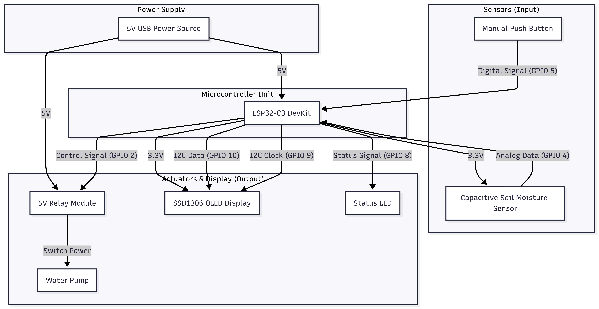

Hardware Design
The system is built around the ESP32-C3, a cost-effective RISC-V microcontroller with built-in Wi-Fi and Bluetooth LE capabilities.
System Block Diagram
The architecture consists of three main subsystems: Sensing, Actuation, and Interface.

Figure 1: IoT Smart Garden System Block Diagram
Component Interface & Pinout
The following table details the connection of peripherals to the ESP32-C3 GPIO pins, defined in plant_driver.h and oled_driver.h.
| Component | Type | ESP32-C3 Pin | Description |
|---|---|---|---|
| Capacitive Moisture Sensor | Input (Analog) | GPIO 4 (ADC1) | Measures soil dielectric permittivity to determine moisture content. |
| Manual Button | Input (Digital) | GPIO 5 | Tactile switch (Active Low) for manual watering override. |
| Boot Button | Input (Digital) | GPIO 9 | Used for flashing and long-press Wi-Fi provisioning reset. |
| 5V Relay Module | Output (Digital) | GPIO 2 | Active High trigger to switch the 5V water pump. |
| SSD1306 OLED | Output (I2C) | SDA: GPIO 10 SCL: GPIO 9 |
128x32 pixel display for status and data visualization. |
| Status LED | Output (Digital) | GPIO 8 | Visual heartbeat and connection status indicator. |
Power Management
The system is powered via a standard 5V USB connection. The ESP32-C3 operates at 3.3V, regulated by an onboard LDO, while the Relay and Water Pump draw power directly from the 5V rail.